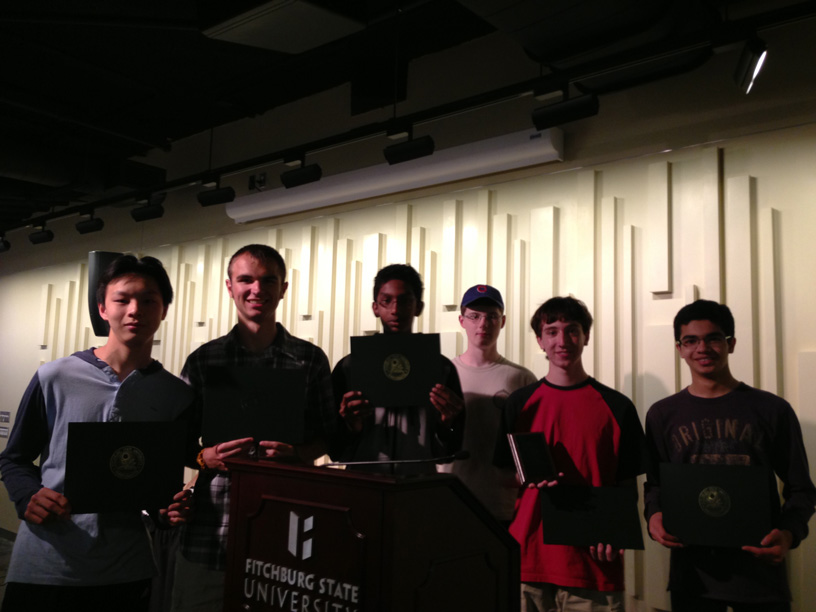

Click here to begin the Spring Fitchburg Programming Contest Qualifier.

The Westford Academy Programming Team is a club devoted to competitive programming and computer science contests. Last year, the team participated in three programming contests. They placed first in two of them and second in the other. The club focuses on developing practical programming skills for competitions.
Meetings are held once a week in the programming lab (Mrs. Trehan's room). Anyone interested in joining is welcome to attend. All levels of experience are welcome.